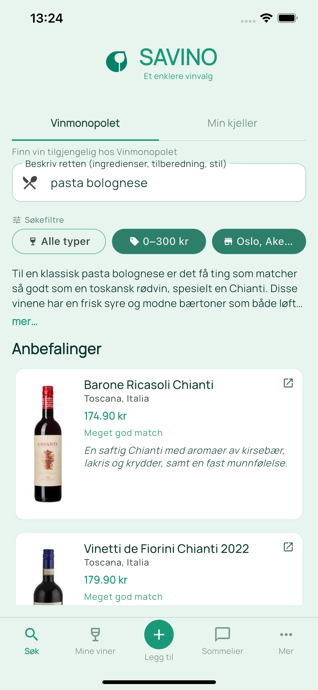
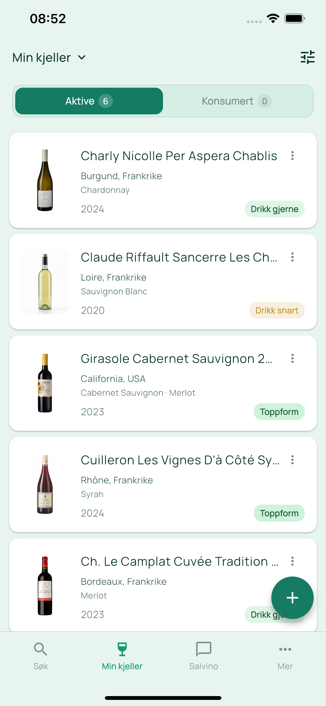
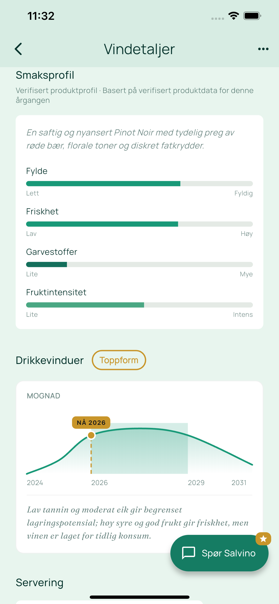
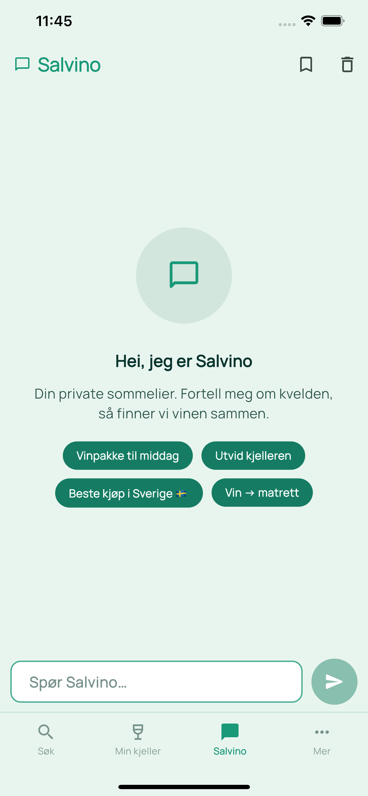

Vin som passer til maten – på sekunder.
Savino er en norsk app som anbefaler vin til maten, hjelper deg med å bygge en digital vinkjeller og lar deg chatte med en AI-sommelier – basert på Vinmonopolets sortiment i butikken du velger.

Hva er Savino?
Savino er en norsk vinapp som hjelper deg å velge riktig vin til maten, basert på Vinmonopolets faktiske utvalg i din butikk.
I stedet for generelle anbefalinger får du konkrete viner som er tilgjengelige, med forklaring på hvorfor de passer til retten du skal lage. Du kan også lagre viner i din digitale vinkjeller og chatte med en AI-sommelier for å få hjelp til å velge vin.
Hva kan Savino hjelpe med?
Vinmatch til maten
Beskriv retten og få konkrete viner fra Vinmonopolet – med match-score og forklaring på hvorfor de passer.
Digital vinkjeller
Lagre viner i din digitale vinkjeller og finn ut hva som passer til maten. Gratis opp til 10 viner – ubegrenset med Premium.
AI-sommelier
Chat med en AI-sommelier som kjenner vinkjelleren din. Få hjelp til meny, anledning og sansebeskrivelser.
PremiumSystembolaget
Grenseshoppere kan søke mot 14 svenske butikker i Bohuslän, Dalsland og Värmland.
PremiumSe appen i aksjon

Min kjeller

Smaksprofil og drikkevinduer

Chat med Salvino
Hvordan fungerer Savino?
Skriv inn maten
Beskriv retten (ingredienser, tilberedning, saus). Savino tolker smaken og strukturen.
Få anbefalinger
Du får konkrete viner med match-score og forklaring på hvorfor de passer.
Tilgjengelighet der du handler
Anbefalingene tar hensyn til Vinmonopolet du har valgt – så vinene faktisk er relevante.
Ofte stilte spørsmål
Hvilke viner bruker Savino?
Savino bruker Vinmonopolets sortiment og tar hensyn til hvilken butikk du har valgt, slik at anbefalingene faktisk er relevante.
Er Savino gratis?
Grunnfunksjonene er gratis og krever ingen konto. Et valgfritt Premium-abonnement gir tilgang til ubegrenset vinkjeller, AI-sommelier og søk mot Systembolaget.
Fungerer Savino kun i Norge?
Primært for norske brukere og Vinmonopolet. Premium-abonnenter kan i tillegg søke mot Systembolaget for grenseshoppere i Bohuslän, Dalsland og Värmland.
Er dette reklame eller sponsede anbefalinger?
Savino har fokus på gode vinvalg. Eventuelle sponsede produkter vises tydelig.